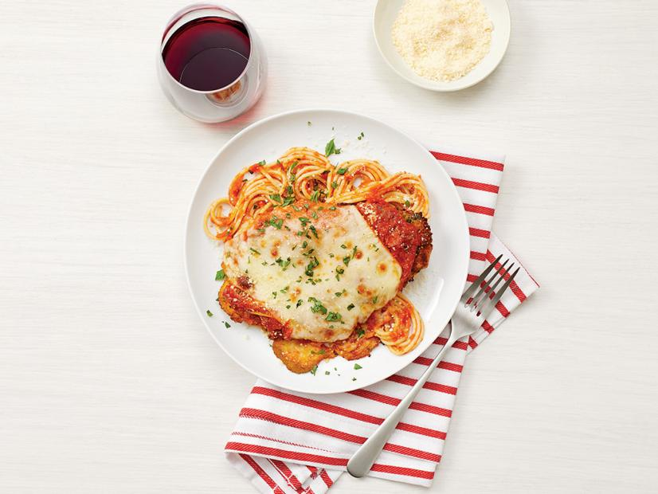

Chicken Parmesan with Pasta

Before We Start
Today we will be one of my personal favorites Chicken Parmesan with Pasta. Chicken parmesan, or chicken parmigiana, is a crispy fried chicken breast that is baked in a tomato sauce then topped with melted mozzarella, parmesan, or provolone cheese.
Ingredients
The Sauce
- 1/4 cup extra-virgin olive oil
- 8 cloves garlic, thinly sliced
- 2 28oz cans of crushed tomatoes
- Teaspoon of dried oregano
- Salt and pepper
The Chicken
- Cup of flour
- 3 large eggs
- 2 cups of bread crumbs
- 1/4 cup finely chopped parsley
- Teaspoon of oregano
- 4 thin chicken cutlets
- Salt and pepper
- Vegetable oil
- 8 ounces of mozzarella
- Grated parmesan
- Chopped basil
The Pasta
- Salt
- Pasta of your choice
Steps
- Make the sauce: Heat the olive oil in a large pot over medium-high heat. Add the garlic and cook, stirring occasionally, until golden, 2 to 3 minutes. Add the tomatoes, oregano, 1/2 teaspoon salt and a few grinds of pepper. Bring to a boil, then reduce the heat to a simmer and cook, stirring occasionally, until thickened, about 20 minutes. Season with salt and pepper. Remove from the heat and puree with an immersion blender, or puree in a regular blender in small batches and return to the pot. You should have about 4 cups sauce.
- Meanwhile, make the chicken: Preheat the oven to 450˚. Put the flour in a shallow dish. Whisk the eggs in a separate shallow dish. Combine the breadcrumbs, parsley and oregano in a third dish. Lay the chicken on a piece of plastic wrap and cover with another piece of plastic. Pound the chicken on both sides with the flat side of a meat mallet or a skillet until 1/4 inch thick. Season the chicken with salt and pepper on both sides. Working with 1 piece at a time, dredge the chicken in the flour, shaking off any excess, then dip in the eggs, letting the excess drip off, and dredge in the breadcrumb mixture, pressing to adhere on both sides. Transfer to a plate.
- Set a wire rack on a baking sheet. Heat about 1/2 inch vegetable oil in a large skillet over medium-high heat until hot but not smoking. Carefully add 2 pieces of chicken and cook, gently moving them around in the pan with tongs, until golden brown, 2 to 3 minutes per side. (Adjust the heat as needed if the chicken is browning too quickly.) Remove the chicken to the rack to drain. Lightly sprinkle with salt. Repeat with the remaining chicken.
- Transfer the chicken to a clean baking sheet and top each piece with 1/2 cup tomato sauce and 2 slices mozzarella. Bake until the cheese is melted, bubbling and browned in spots, 10 to 12 minutes.
- Meanwhile, make the pasta: Bring a large pot of salted water to a boil. Add the spaghetti and cook as the label directs. Reserve 1 cup cooking water, then drain. Warm the remaining tomato sauce (about 2 cups) over low heat. Add the spaghetti and 1/2 cup reserved cooking water; toss, adding more cooking water as needed. Season with salt and pepper.
- Top the chicken with parmesan and basil. Serve with the spaghetti.
Mangia